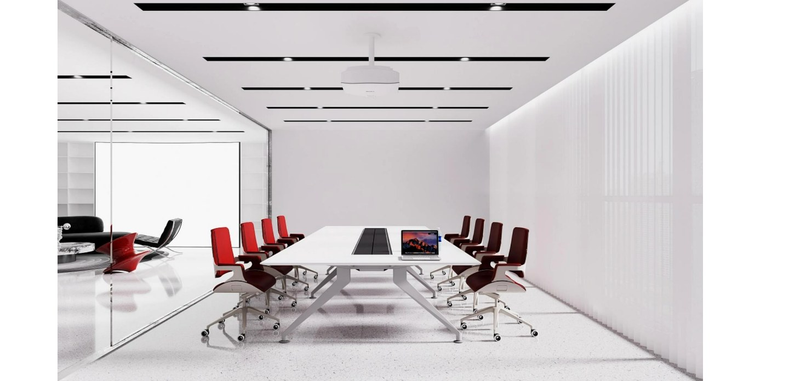
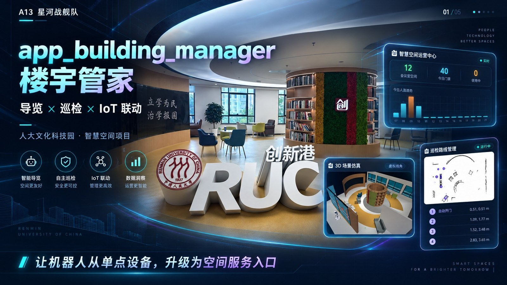
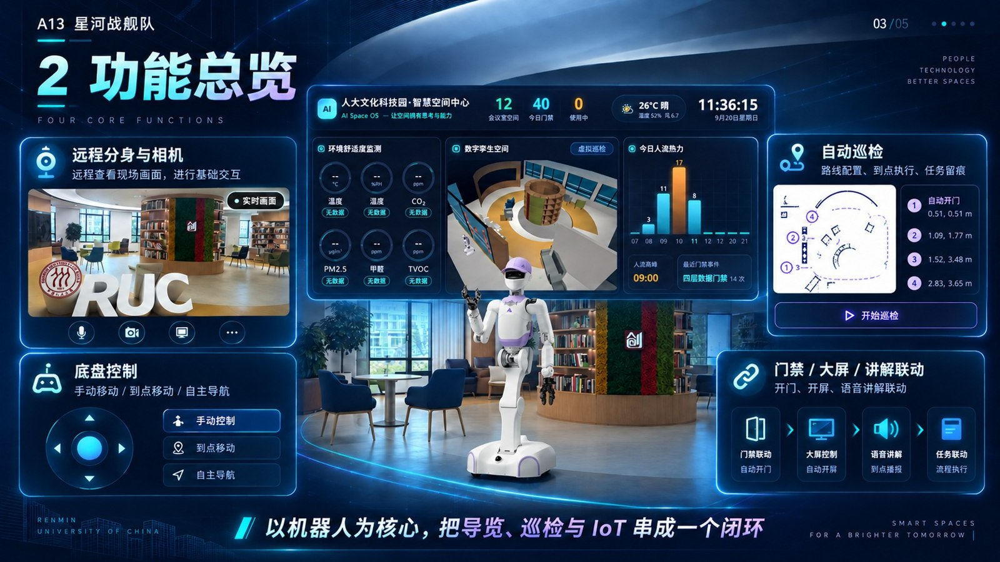
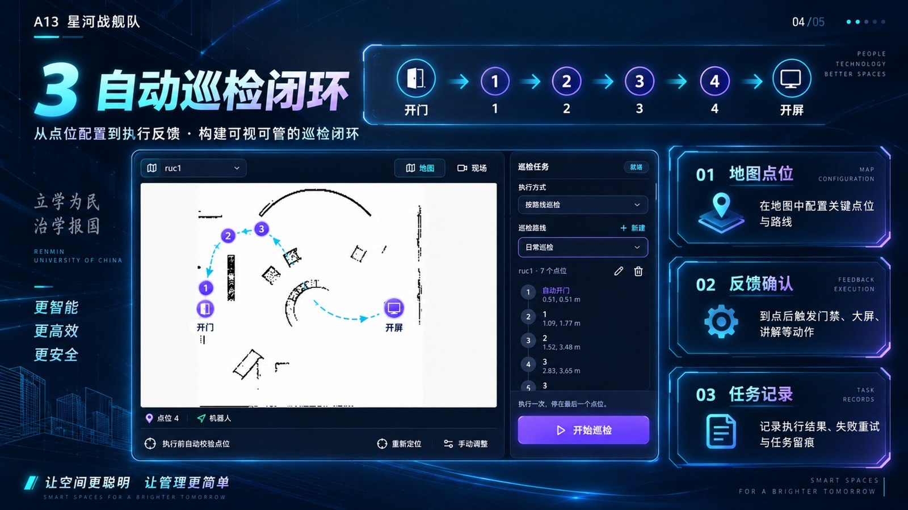
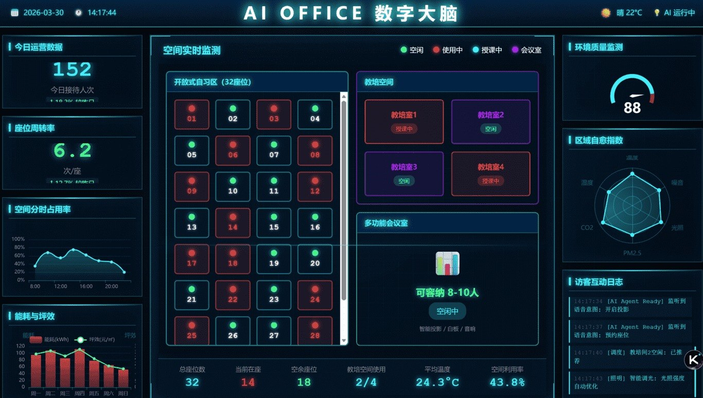

智能访客接待
串联预约、到访核验、门禁权限与路线引导，让接待流程清晰有序。
查看接待演示 ↗OFFICE CLAW · 空间智能体
AI OFFICE 面向真实物理空间，通过 Office Claw 连接机器人、物联网设备与企业系统，让空间感知需求、规划任务并协同执行。
面向企业办公 · 产业园区 · 共享办公空间

01 / 产品与场景
以 Office Claw 为协同入口，连接空间中的人员、设备和服务，让日常办公减少重复操作。
串联预约、到访核验、门禁权限与路线引导，让接待流程清晰有序。
查看接待演示 ↗围绕时间、人数和设备需求，协同会议室预约、参会通知、灯光与空调。
查看会议演示 ↗结合空间使用情况开展能源管理，将故障报修连接到派单和处理记录。
查看运营演示 ↗在线演示为预设场景交互，用于说明产品工作流程；不连接真实门禁、设备或业务系统。
产品界面 / 应用实践
连接机器人、楼宇设备与业务流程，把导览、巡检和空间联动放到同一个工作入口。

面向园区与办公空间，围绕机器人远程分身、移动控制、讲解服务及自动巡检组织日常任务。

远程操作、自主巡航、立体控制与空间设备联动。

将地图路线、反馈确认与任务记录组织成可查看的工作流程。

以可视化界面呈现空间使用、环境监测与服务动态。
界面图片展示项目功能与场景，图中数据为截图时的演示内容。点击图片可查看大图。
VIDEO / 创新港仿真演示
创新港场景与控制界面的录屏节选，展示三维空间视角、远程操作及设备联动画面。
约 1 分钟 · 无音轨 · 仿真环境演示
02 / 技术架构
把物理空间、设备接入和业务流程组织在同一套架构中，围绕具体任务进行协同。
组合隔断、家具、会议室与办公设施，适应空间布局和使用需求的变化。
通过设备接入与编排连接门禁、照明、空调、传感器等空间基础设施。
将自然语言需求拆解为任务，协调设备操作、企业服务与业务流程。
以本地部署、租户隔离和授权执行为设计方向，让任务运行遵循数据边界。
03 / 完整解决方案
为业主、企业与园区提供咨询规划、模块化空间建设、智能系统集成及运营服务，让物理空间与数字能力共同交付。
围绕使用需求、空间条件与运营目标确定方案。
协同模块化装修、家具配置和物联网设备集成。
连接日常服务、设施维护与空间使用反馈。
04 / 关于 AI OFFICE
AI OFFICE 聚焦空间智能体与智慧办公解决方案，由北京小宸致远科技有限责任公司运营。
项目以 Office Claw 为智能协同核心，探索人工智能、物联网与空间服务的融合。在人大文化科技园场景中，围绕办公服务、设备编排、机器人联动与本地智能开展应用实践。
了解产品工作流程 ↗团队覆盖园区运营、AIoT 硬件、智能体平台与项目交付，结合空间业务需求推进产品开发。
负责商业规划、园区运营与客户合作。
负责产品、AIoT 硬件与客户服务。
负责 Office Claw 平台架构与大模型部署。
负责财务管理、项目运营与生态合作。
展示与成果
持续参与技术交流、产业展览与创新赛事，让空间智能方案接受真实场景的检验。

项目材料展示了“单项创新奖”“十佳成果专项奖”及入驻签约证书。

AI OFFICE 展位与空间智能解决方案展示。

围绕 Office Claw、空间智能与园区应用开展产品介绍。
CONTACT / 联系我们
欢迎就产品体验、空间试点、园区服务与合作机会联系我们。